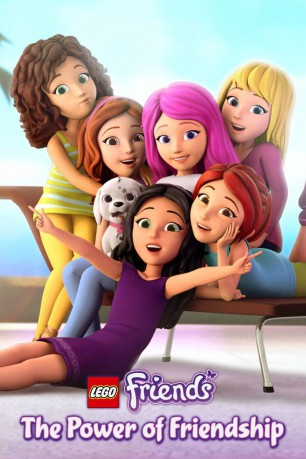

")
 
 IMDB-Wertung: 7.5 / 10
IMDB-Wertung: 7.5 / 10  Metascore:
Metascore: 
Five best friends face adventures side by side in their hometown. Zany antics, love and missteps are better with friends!
Jahr: 2016
Dauer: 22 Minuten
FSK:
Land: Studio: NetflixTonspuren: - , - , - , - , - ,
Untertitel: Deutsch, Englisch,
Auflösung: 720p (1280x720) Größe: 623 MB
Genre: Animation/Trick, TV-Serie
Regisseur:
Drehbuch:
Soundtrack:
Darsteller:
Datei: X:\Kinder Collections\LEGO\LEGO Friends\LEGO Friends - Freunde schaffen alles S01E01.mkv seit 12.09.2018
Festplatte: Kinder-Filme+Trick
 Es gibt insgesamt 34 Filme in der Gruppe 'Kinder Collections\LEGO'
Es gibt insgesamt 34 Filme in der Gruppe 'Kinder Collections\LEGO'